Chase the Snake 2003
Chase the Snake is an annual ride held by the Wetleather list, centered on the town of Pullman in eastern Washington. Nominally, it is about a ride that follows the Snake river, although that seems to be only partially true. This year there were 40+ bikes there, and thus we split into many smaller groups and went our own way. I joined the fast group - otherwise known a Lead, follow or get the hell out of my way group. To get there, I joined up with fellow aussie Lindsay Harris. Instead of the usual blast to get there we took a two day liesurely (!?!) ride up through Canada. This is the ride report I posted to the list, with a few embellishments (and photos).
There's a snake in there, and a chair as well...
There are people with games,
and stories to tell,
Open wide, come inside,
It's Play School.
So now that the adrenaline has been removed from the caffine system, a short summary of the weekend's events:
Lindsay and I decided to leave two days early and go via Canada. We had freshly minted copies of Destination Highways for both BC and WA and intended to use them in anger!
For transportation purposes, my aprilia was getting jealous of all the time I was spending with the muscular blackbird and wanted some attention all to her fine italian self. The intent was to clock up a couple of miles for the 9K service and run out the current set of tyres (D208GPs). Lindsay was mounted on the sporty beemer for this occasion.
Day 1 had us meeting at I-5/405 before setting off north. Drone up I5 to the 530 exit and then via Darrington to the Cascade Hwy. I'd managed to mostly contain my right wrist until this point, just trawling along behind Lindsay. Fortunately, I overcame my better judgement and started to run a bit faster on the last section of 530 and Hwy 20 until we filled up at Marblemount. After that, it was a speed limit +10 until we get past the Cowboy Sheriff at Newhalem. Normally he's there, but he wasn't this time. Odd. Oh well, as soon as we're out of the town, click down a couple of gears and twist the loud handle to the fullest extent.
|
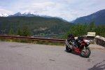
|
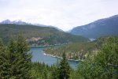
|
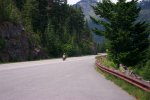
|
{kind=link}
{kind=link}
{kind=link}
It's been quite a few months since I've last pushed a bike really hard on the road. I'd pushed the XX a bit coming back from my CA trips, but only on faster sweepers - not the corner after corner of tight 30mph stuff that Hwy20 gives you. Took a while to settle in to a nice rythmn, but once I did, it was great fun to be out on the lady again. One thing that took me quite some time to get used to was the new rear sprocket. The stock gearing is 16/42 which makes 1st near impossible to use around town - you can't let the clutch out fully until you're doing 25mph. Based on advice from the aprilia forums, a 44T rear was installed, and it made a huge difference. Much more controllable on the slow corners, but it also meant going down the gears has a much smaller gap. In fact, when I first pulled up to meet Lindsay, I kicked down through 5th and then 4th and the revs barely changed - I thought I'd missed clicking the gear shift altogether! Now I have (comparatively) barely any engine braking, so that required quite an adjustment in technique riding this bike.
Arriving in Winthrop, we started to instantly melt. Pretty hot out that way! Had a snack, downed a litre of water and had a chat with a couple of cruiser riders that were heading the opposite way on a 5-day trip of their own. You could tell the harley rider, because his bike was clean as a whistle, while the yamaha mounted rider's bike was covered head to toe in bugs - you could barely see through the windscreen!
Head north along hwy97 and over the border. Guards weren't even interested in what country I was from, let alone whether I had a passport or not.
"Where ya from?"
"Seattle"
"Where ya goin'?"
"For a ride - staying overnight somewhere east of here. I'm with him"
(pointing at Lindsay)
"Ok, off ya go"
Suppose they don't think the guy with the long blue hair on a very loud sportsbike is going to count as a terrorist....
Fill up at ossosossyssoosos and then head east along Canada Highway 3. This highway has not just one, but three different DH numbers for it! First climb up the hill was a struggle for me. Back to metric again, which wasn't much of a problem as an indicator, but the really tight corners I couldn't get the hang of again. At least one factor in this was the road surface - that really light grey, small gravel/tar combo. It's really hard to see what loose stuff was on the surface and there were places where it noticably had trucks dragging crap from the sides of the road onto the riding line. The other issue was mental - here in the US I just don't really get to ride these tight sort of roads at all. A typical "twisty" road seems to be 30mph marked corners, with maybe the odd 25 thrown in for good measure. In the road diet I grew up on, they are considered fast sweepers. But, I'm really out of practice on the tight stuff, so it made me feel quite uncomfortable for the climb up the hill. Only at the top did I start feeling a little better, and that showed once we hit more later on that day.
Cdn Hwy 3 is a rather interesting mix of really tight stuff and big sweepers.
It's a wonderful road to ride - even if all you want to do is look at the
scenery. Seem one pine tree, seen 'em all - where's the next corner!
:) Stopped for fuel again and then quickly back on the road again.
We'd decided during the day that Nelson looked like a good place to stop. It would place us about 30 miles from the start of the BC DH1, which we would tackle the next morning. I'm in the lead as we pull into town. Pulling into a carpack just around the corner, I look over to Lindsay to ask him where he'd like to crash for the evening. Noticed the Best Western behind him, but waited for his response: Well that place looks as good as any - look we're already in their carpark!
Decision made.
Wander over, check in, get changed and head down to dinner. Lovely NY steak with peppercorn sauce, a couple of beers and then a wander around town.
|
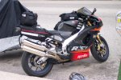
|
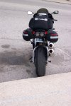
|
{kind=link}
{kind=link}
Wake up Friday morning to the sight of wet roads, but luckily no rain. Deciding that we'd have breakfast after the ferry ride, we pack up and mount the bikes. The little section of Hwy 3A up to the Lake Kootenay Ferry is populated, so there's no chance of really moving along. That's good because the roads were damp, and very light drizzle, but nothing really serious.
Arriving at the ferry, we discover that the timetable given by DH is completely useless. We're about 50 minutes too early for the ferry. I was in need of petrol, but the servo looked really dodgy, so decided to fill up on the other side. But... the bakery looked good so we had breakfast there. At last - a Lemon and poppyseed muffin! My favourite. The poppyseed cakes and muffins in the US never seem to include the lemon bit - always almonds. A cuppa with the muffin and we notice a couple more bikes pulled up at the front of the queue. Wandering over to chat we're informed we should head to the front (ala Seattle ferries). Just as we're doing so, two more bikes pull up along side us and then follow to the front. The collection is now - oldish Goldwing, a harley, a Triumph Trophy, VFR, mille, R1100RT and a yamaha cruiser of some description.
Heading onto the ferry, Lindsay and a couple of the lead bikes almost get taken out by a couple of motorists too keen on getting on the ferry. Once loaded, we head off up the lake. Very picturesque. Lush green valleys, over blue water and low clouds. I imagined trolls, hobbits, dwarves and elves poking their heads out at the strange visions passing by.
|
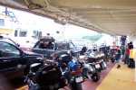
|
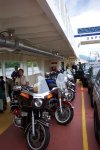
|
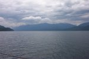
|
{kind=link}
{kind=link}
{kind=link}
After leaving the ferry, we filled up again and, taking a suggestion from a couple of the other riders, waited for the traffic to clear, having another coffee in the process. This is DH1, and the only way onto the northern end of it was via the ferry. If you time it just right, you hit the road just before the next ferry arrives, leaving maximum time for the traffic from the last ferry to have cleared the end of the road.
At last we hit the road, and it's every bit as good as the book makes it out to be. Corner after corner after corner of 30-60km/h marked road. Lovely smooth hotmix too, at no time did I ever have to watch the grip levels available. I caught the Trophy rider about a third of the way down and about two-thirds came across the VFR rider. Flew past him and continued on my very merry way - stopping at the end to wait for Lindsay to catch up: Ear to ear smiles all around!
The plan was to get to Pullman fairly early yet still have fun, so we head back west along hwy3 until we hit the border crossing on Hwy 21. Simple run back through there again (they wanted to check my passport this time!) and head through to Metaline. Arrive at the township getting low on go-juice and start looking around. Uh oh - no petrol stations! GPS finding says nearest is 32 miles from here. I'm on reserve already, which means I'd never make that! Ask a local and it seems we're not quite where we think we are! Metaline falls, and a couple of places for fuel are just a couple of miles down the road. Phew!
Filling up, we start chatting with some guy in a clapped-out car there. blah blah blah, usual-chat-with-stranger-thing. Next thing I know and he's grabbed box out from a bag next to him
"Wanna buy a toolkit for the bike?"
"eh?"
"Oh.... No thanks."
Oddball sales tactic for fell-off-the-back-of-a-truck gear. Anyway, bit of refueling the body and we head off down 21, then ID41, Hwy95 and so on. Heading down 95 and we're running fairly slowly behind traffic. Not only that, but the lead car was sitting somewhere between 5 and 15mph below the speed limit - constantly changing speed. ARRGGHHH! Getting the shits with it all, I drop back to second and pass Lindsay and the three cars over a double yellow and hit clear roads again in about all of two seconds flat (while trying to keep the front wheel on the ground and shifting gears as the bike bounces off the rev limiter). We'd been travelling a bit slowly because we thought I'd be stretching the fuel range by taking 130miles between stops. Traditionally my mille had only managed 120mi before the light would come on and I'd get another 15mi or so after that. Well, I gave the bike a good thrashing after passing the cars - screeming through corners at ton plus. Onto 270 and continue to nail it. No matter what I did, the light just didn't come on - several times hitting Ludicrous Speed on the straight sections. Only just as I hit the edge of town, at 136mi, did the light finally come on! Hmm... maybe the bike is starting to break in - at 8000miles on the clock?
More fuel, and I'm off leading again, heading down hwy27 towards Pullman. This road offers a lot of really nice sweepers in amongst the green wheat fields. I get into a nice rythmn here again, settling in at about 80-90mph and just rolling with the curves. left, right, left, right, straight..., left, right... Finally ending as I pulled up to a stop at the northern outskirts of Pullman to wait for Lindsay to show.
Waiting, waiting, waiting....
Decide to take helment off, ah, there's Lindsay - doh! Suit up and meander off to find the hotel for the weekend.
Arrive to the site of Gooz up on the balcony, plastic cup of beer in hand, Ducati out front and a couple of other bikes I don't recognise (colour-matched almost identical orange harleys). Checking in and along comes a a metallic orange GoldWing trike. Not any old trike mind-you! It's a brand new one with the full conversion done to it. Much dollars invested in this one Cap'n! Even had this funky cantilevered trailer, that more than one person went looking for the wheels on. Elderly couple doing a multi-week tour of the north west.
After much gas-bagging and a few more bikes turn up, Lindsay and I head out to JT's for some dinner. Starving after a long day! There's about 5 bikes at the point we arrive, and Randall's easily seen along with a couple of other vaguely familiar faces. Intros all-round and then head inside to grab a beer and tucker. Very, very yummy lasagne and garlic bread! Back out to eat it at the table and slowly more motorcycle scum turn up. Coincidently, most of them seemed to be named Brian....
The sun is setting, so I decide to wander back to the hotel. Gooz apparently has more beer floating around. At least I could drink and not have to worry about the ride back. Reach into pocket to grab glasses (not sunnies) and come out with an arm, one lense and the frame. Oops.... screw had fallen out. Feel around inside pocket and found the screw still there, but decided to hot-foot it for the hotel first and then try to repair them later. Head back to the hotel with an almost set sun and wearing sunglasses. At least Lindsay's tail light is bright :) More beer, more people, more bikes. Get told to shut up because we're making too much noise. Go to sleep.
|
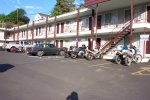
|
{kind=link}
First section of the day is uneventful other than having problems with Randall throttling off about halfway around a car when overtaking and having the following 6 bikes just about run up his arse every time! Not so bad for Gooz and I on V-twins that have a large amount of engine braking when throttling off, but the others are having real problems. At this point, I also notice the guy in front of me on the beemer doesn't look to be particularly safe either. He's really twitchy on the road. Lane changes to overtake etc are positively dangerous. These oddball flicks of the handlebars and cutting corners etc. I decide it's far safer to be in front of him than behind.
After getting to the top of the Spiral Highway and finding it closed, we head off somewhere north on hwy95, I think. Dunno. Just following Randall, who has now, after getting his arse chewed out by everyone at the stop, improved his overtaking technique so that he doesn't score a six-bike wedgie every time.
First set of corners we encounter is Winchester Grade. Lotsa tight stuff here. After about the first couple of handfuls of corners, Rob F gets the shits with hanging behind Randall's slowish pace and takes off - overtaking 5 of us at once, then diving into a tight left-hander, and just about parting company with the bike as he hits a huge mid-corner dip and tosses him really badly. A few corners later and Brett heads off after him. I'm tempted to do the same, but I'm just not feeling quite comfortable. The guy on the beemer is still looking really dangerous so I've made up my mind I must get around him sooner rather than later, but I'm still not really up to pushing the bike through the tight corners yet. Right-handers are fine, but the left-handers give me the wobblies. As we get closer to the top, I finally get a bit of straight road and rip past Randall and the beemer (still no idea who the guy was at this stage) and take off over the very broken surface. Come across Rob and Brett having a smoko on the side of the road, slow down, but Randall's still coming at full pace so wick it up again and take off down the road (later learning that I'd showered them all in rocks from the sticky rear tyre in the process).
Slow down for a town and let Randall take the lead again. Follow him through the next series of highways. We climb a small ridge and the road opens to two lanes. Just then Randall points up at a bike yellow and black warning sign - twisty road, next 8 miles. You fucking beauty! Drop a couple of cogs and fly past him like he's standing still. Roll into the first 55mph marked corner and just nail the throttle. About the third or fourth corner I sneek a peeking the mirrors and see Brett behind me at a reasonable distance - the fun has started! Keeping it in 3rd and 4th and just tickling the rev-limiter I'm really enjoying the high-speed downhill run (later I find this is called the New Whitebird Grade) Rolling from sweeper to sweeper, just hanging off the bike a bit, leaning right over and powering through the corners, throttle off a little to set entry speed for the next one. Lather, rinse, repeat.
Oh fuck.....
Copper...
I've come flying around a right-hander and noticed a set of flashing party lights on the next corner down - a left-hander. Immediately closing the throttle and applying a large dose of brakes, I go past him somewhat (ok, a hell of a lot!) guilty looking. The guy is standing beside the open door of the mobile home that has broken down and giving me the really evil eye. Ah bugger it, there's no way he could catch me, so as soon as I'm around the next corner, it's business-as-usual. The descent is wonderful fun. No matter what speed I'm doing, the bike is rock-solid in the corners. In fact, if I'd had the leathers on, I'd be going another 20mph faster in the corners and dragging the knee. Not a hint of movement from either the chassis or the super-sticky tyres!
Finally we hit bottom and I pull off to the side at the little intersection and wait for the others to turn up. (Brett later comments that the tyres were so hot that as I pulled off, I had a huge rooster-tail of rocks slinging up behind the back of the bike - well over my head in height he said). Turn right into Whitebird and immediately stop. Sheriff's car has the road blocked off for some parade thing. Lots of really young girls tarted up to look like much older girls, I'd say most of them weren't older than 10. Pretty sad really that their parents can get away doing that shit to them. Anyway, after some time the road is opened and we (almost literally) walk the bike through town.
On the other side, it opens up and once again we're back into holigan mode. Randall, beemer, me, FJs x2 and Goozman. First few corners start to up the pace again. Once again, the beemer rider is scaring the shit out of me. Four corners in a row and he's completely cut them way too tight. On the fourth corner, he's all but clipped a cylinder on the bank on the inside of the corner (he had to lift the bike and correct the line pretty savagely to avoid contact), the previous ones he's cut well inside the slowly fading white line well before the apex. I simply cannot follow this guy because he's going to bin it sooner rather than later and probably take me with him. So after the fourth corner I pull a fairly dangerous hairball move on the exit of the inside of a blind left-hander to get past him. After that, I follow Randall up the slopes through the hairpins. Not knowing the road, and the road conditions are fairly dodgy (we'd already come through one corner where the road was completely covered in gravel) I decide to sit behind Randall and let him set the pace.
Lucky I did, because we've come around a left-hand hairpin in about the middle of the road, to find a sheriff's 4wd slowing down to a stop, just inside the exit of the corner. Pretty bloody dumb place to park the car - right where you can't see it. Didn't have any problems avoiding him, although I think the others had issues, and he gives us the Evil Stare again. I think it's the same guy I went screaming past at Mach 1 on the way down the hill. Anyway... we finish the climb and pull over for a photo shoot and rest at the lookout.
|
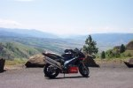
|
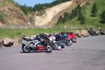
|
{kind=link}
{kind=link}
More highway droning and then Hit ID13. The entrance is a long downhill slope. This is really nice road and Randall is really holding me up. I really want to go far faster than he is, but there's just not the oppourtunity to do so. Lots of tight corners, with no straights in between. I'm 6th in the group, with only Gooz behind me, who is lagging quite a lot. At the bottom there's an intersection with ID14. No sign of the Duc, so I pull over to wait for him. It will also give me a good chance to get an open piece of road where I can set my own pace.
A couple of minutes later and gooz shows up. I nail it and start the run through the valley. A gorgeous piece of road and within a minute I'm flying up on the back of the group. I watch the pace for about 30 seconds and decide that the road is too good to waste. Overtaking everyone in two moves, I then set out at a fairly brisk pace just watching the corners and using throttle and, occasionally, gears to set the right speed - never needing to touch the brakes. That is, until I round a right-hander and find sitting on my side of the road, an old batter truck parked, facing me. FAAARRRCK! Anchors out, but not drastically, and I go around him. At this point I also notice Brett is behind me again, so up the tempo goes and we enjoy a fun blast through the country-side at something highly-illegal in speed terms. Gorgeous pavement and sight-lines though, so doing excessive speeds and lots of lean-angle is not a problem here. Once again, the priller is just completely gorgeous to right. Absolutely rock solid. Apart from watching the roads, my mind keeps going over the fact that I'm just _so_ glad I spent the extra money and purchased this bike. It's times like these where it really comes into it's own. It's a horrible bike to ride around town or along the I-5, but put corners in it's way, and there's really nothing that can beat it for pure riding pleasure.
We stop in a town starting with K that nobody can remember the name of, nor pronounce properly. Little joint that advertises shakes and burgers. Sounds good. After doing the ritual undress we walk inside. I scare the locals. We order lunch - BLT and some water will do just fine thanks. Water's delivered, gooz gets up to take a leak and promptly decides I'm a smelly bastard and that I need a wash, tipping my glass of water all over me and the floor! Thanks mate... Yummy lunch, and the crew decide the fireworks shop across the road looks like a good place to visit. Luckily Rob F brought the hardbags on his FJ :)
As we saddle up after lunch, we all promise to take it a bit slower. Food in belly dims the reactions etc etc. About 5 minutes out of town and that's quickly forgotten! A few more sweepers, then back to the highway to the last set of curves for the day. Randall back in front again.
The final run is an uphill climb, then along a plateau and back down a valley. No idea what the name of this road is, but it sure as hell was a fun ride. Once again, I find Randall holding me up in the corners. Brett's in front of me so he takes the first pass and then I get the next one. A car in the way on a short straight stretch is easily dealt with and Brett and I head off at silly speeds through the corners again. I feel Brett is holding me up just a little - particularly later on as I keep running up the back of him in the corners. I'm probably doing 5mph faster than him in corner speed. I'm now starting to feel far more comfortable on the tight stuff compared to both earlier in the morning and the days before. Something just clicked and now where I was struggling to maintain a good corner speed, now I just would roll in, crack the throttle and accelarate through the corner.
Near the top, Brett waves me past and so I take off. I up the tempo again from our already fast pace. The roads were nice and clear here. Good lines, well marked and the surface was more good than bad. Not caring about the others I just roll with my own speed, pushing a little, but not too uncomfortable levels. Brett's still there, Rob F a little way back. As usual on group riding, it's far easier to be following someone than to lead. Things are rocking along really nicely until, once again we come around a corner only to discover a guy in a truck towing a boat (I think) was about to enter the road. Grabbing a moderate handful of brakes (this being the 4-pad Brembos, so that's all you really need to stop NOW) the guy quickly shifts into reverse and gets off the roadway. Resume our usual story.
The downhill section was quite a challenge. Having had a number of crashes due to front end slides, I'm always hesitent about driving too much weight on the front wheel. I'm even more hesitent when it comes to downhill corners. Yet, this time I'm riding through fairly hard, but with an extra layer of caution thrown in. Just as well, as on the way down, there are a number of corners that, mid way through develop some really nasty set of ripples and/or "speedbumps". A couple of times I'm about to roll in, only to notice the shadows, so having to brake and correct the line as I'm entering the corner. I'm mostly successful at doing this, but a couple I'm not, and they certainly test out the steering damper's capabilities. Luckily, though upsetting, nothing serious gave me a fright. At the bottom, Brett and I pull over and have a chat - both with huge grins on our faces. Seems that things were fairly even I had greater corner speed, but he was going in faster than me, and accelerating the same on the way out. That seemed to gel with what I was experiencing when our roles were reversed with me continually climbing up the back of him in the corners.
We regroup and set off again for the slow trip home. No more twisties for the day, just a few sweepers. Back to the hotel, have a drink of water and head out to JT's again for dinner. Yummy dinner again, but had to be really careful. I have a severe allergy to fish - can't even be in the same area as it when it is cooking - so some special care from Chris, to bring me food from inside the house was hugely appreciated!
More gasbagging, then head back to the hotel for a few more beers on the verandah, before finally crashing out at around 11pm.
Sunday morning starts the same way as Saturday. I was originally going to spend an extra day in Pullman and then take a day or two to get home, riding with Lindsay. However, my activities of the days previously had trashed the rear tyre far faster than I was expecting. Despite riding in a fashion that was deliberately designed to wear out the outsides of the tyre (hard acceleration in mid corner and then rolling off the throttle as the bike came upright) I'd worn right down to the wear indicators in the middle! Oh well, not good. Limp-back to Seattle time. I offer my appologies to Lindsay and organise to head home with Gooz and a very relaxed pace.
We're out of there by 8am and on the road through the green hillsides. If I was able to smell anything, it would have been gorgeous. Unfortunately I have close to zero sense of smell, so I got to enjoy the visuals instead. Gooz sat right on the speedlimit the entire way. First along 195, then 26 and then 261 as we headed north to the Inland Passage and finally onto the I-90. Stopping for Pertol in Vantage, we head back out onto the Old Vantage Hwy and head west. Getting to Ellensberg, I'm so tempted to toss on the left indicator and head up hwy97 to take hwy 2 over the mountains, rather than 90. However, considering the state of my rear tyre, I decided that probably wasn't a good idea and so continued plodding west. Traffic has picked up now and is really inconsistent. The speeds were all over the place. Nobody was holding a constant speed, which really pisses me off. It's worse when you're behind another bike, so I decide to go around Gooz and do my own thing. I peg the speed at Speed Limit + 3mph I maintain a steady pace towards home. There was one woman who was really annoying - she'd speed up to 10-15 over the limit, race up past a few cars and then immediately drop back to 5 under. Whereupon the cars would all pass her again. She did this probably 10 times before it annoyed me enough to do something about it, so I sped up, got well in front of her and then resumed normal activities.
From this point on, the trip home was really uneventful. Coming off I-90 into the downtown area got me some funny looks from the Pioneer Square crowd. Sportsbike black with bugs and tail bags, rider with similar look (visor was coated with bugs too!). Seemed to confuse a lot of people. Got home, unloaded and then had to start prepping for Mark and Meredith to show up some time later. Mark had an interview the next day and was going to crash at my place for the night.
All in all a great trip! Canada has some fantastic roads that I need to explore more of, so does Idaho. 1600miles and a shagged rear tyre are the products of the efforts. Good fun! When can I do it again?!